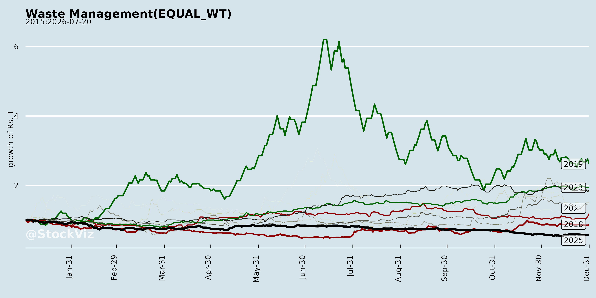
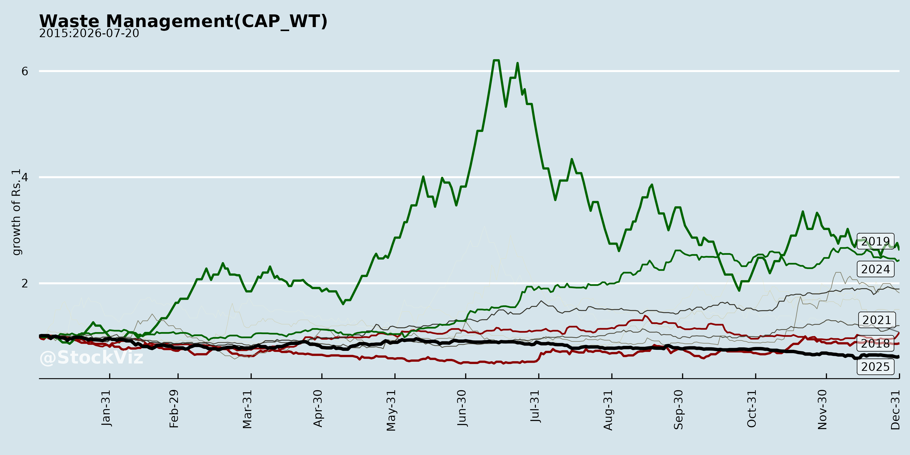
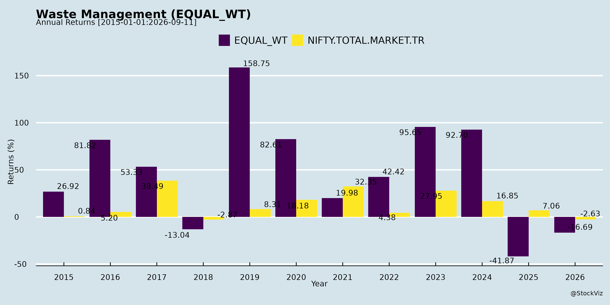
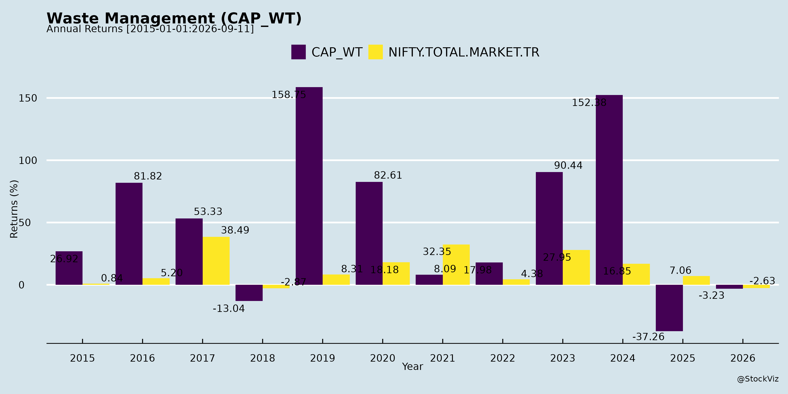
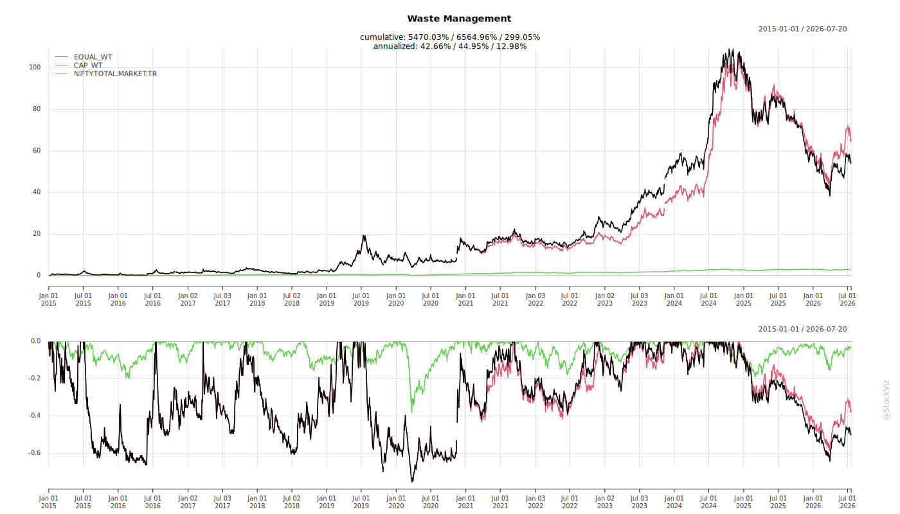
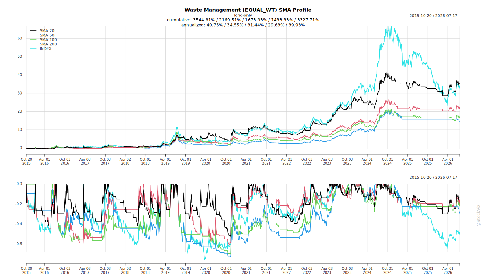
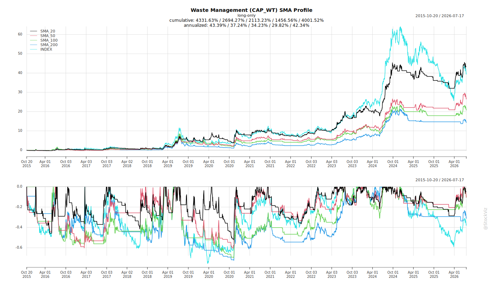
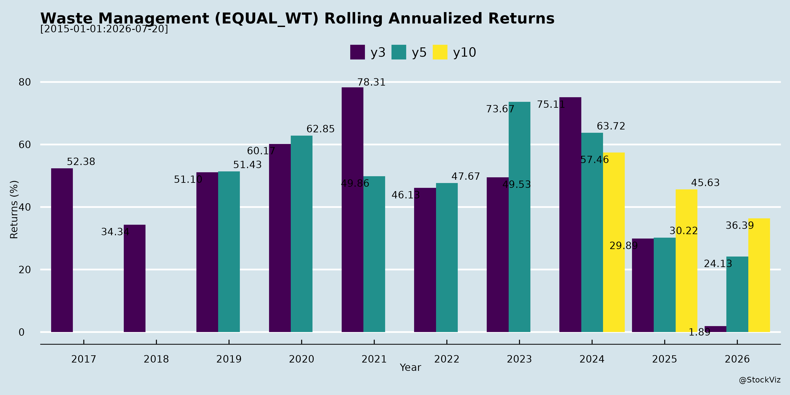
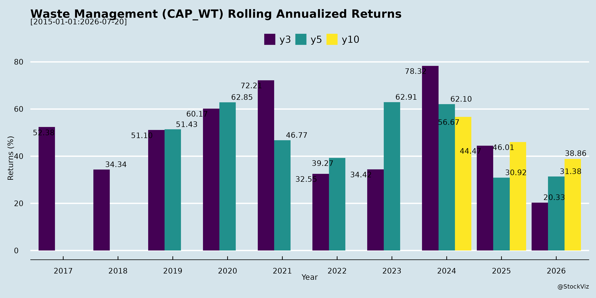

asof: 2026-04-15
Evolving Challenges
Over time, companies operating in the infrastructure, waste management, and environmental sectors have faced a shifting landscape of operational, financial, and administrative challenges.
Evolving Opportunities
Despite these hurdles, the market has matured to offer substantial new opportunities driven by government policies, technological innovation, and expanding markets.
asof: 2026-04-15
Adverse Weather and Environmental Factors Continuous, unexpectedly heavy rainfall and natural disasters have severely disrupted on-ground construction activities, particularly in sewerage and civil works [1], [2]. These extreme weather events cause excavation sites to become waterlogged, repeatedly interrupt work progress, and lead to structural instability or the partial collapse of trenches [3]. Extended monsoons also force government administrations to prioritize disaster management and restoration over standard infrastructure development, further stalling scheduled work [4], [5], [6].
Administrative and Political Delays The absence of elected officials and established committees in municipal machinery has caused significant delays in the allocation and awarding of new projects [7], [8]. Even after projects are bid out, administrative friction and lack of empowered personnel within government bodies can drastically slow down crucial decision-making and execution timelines [9], [10].
Land Acquisition and Client Readiness Infrastructure and waste management companies frequently grapple with project deferments caused by delays in land acquisition and clearance [11], [12], [5], [13]. In many cases, clients fail to complete prerequisite civil works on time, or projects are pushed back due to various internal shifts and delays at the client’s end, leading to rescheduled deliveries and missed execution targets [14], [12], [15], [16].
Working Capital Constraints and Milestone Structures The cyclical nature of civil engineering and infrastructure contracts requires massive upfront expenditures for design, soil investigations, site mobilization, and raw material procurement long before any billable milestones are formally achieved [17], [18], [19], [20]. This creates a mismatch where significant costs are booked in the short term without immediate revenue realization, heavily impacting near-term EBITDA and PAT margins [21], [20], [22], [23].
Receivables and “Tough Paymasters” Municipalities and government authorities are often described as “tough paymasters,” which directly restricts cash flow and keeps Days Sales Outstanding (DSO) at elevated levels [24], [25], [26], [27]. Companies occasionally deal with long-overdue receivables from municipal corporations that require prolonged litigation or arbitration to resolve, sometimes forcing management to recognize doubtful debts on their balance sheets out of prudence [28], [29], [30], [31].
Competitive Margin Pressures and Rising Costs Increasing competitiveness in the infrastructure bidding space is forcing companies to adopt more aggressive pricing strategies, which is structurally suppressing historical profit margins [32], [33], [22], [34]. Concurrently, companies are experiencing higher employee costs driven by team expansions for new business lines, annual appraisals, and incentive cycles, which further dilutes overall profit margins [35], [36], [37], [38], [39].
Internal Operational Bottlenecks As companies scale and transition to handle larger, more complex projects, they face higher engineering lead times [40], [41]. Furthermore, internal corporate realignments, such as the re-implementation of enterprise software like SAP, have created temporary bottlenecks that disrupt the pace of execution and delivery [40], [42], [41].
asof: 2026-04-15
The environmental services, water/wastewater management, and solid waste management industry is a complex, capital-intensive sector heavily intertwined with government infrastructure goals and sustainability initiatives. Understanding this industry requires looking at its diverse service offerings, execution challenges, financial dynamics, and evolving technological trends.
Here are the key things to understand about this industry:
1. Diverse Service Portfolios and the Shift to Circular Economy Companies in this sector operate across a broad spectrum of environmental solutions, moving beyond basic disposal into advanced resource recovery and circular economy models. Key sub-sectors include: * Water and Wastewater Management: This involves setting up water supply systems, sewerage networks, and wastewater treatment plants [1, 2]. Advanced companies focus on Zero Liquid Discharge (ZLD) technologies that recover waste heat and treat highly corrosive industrial effluents [3-6]. * Solid Waste Management (SWM): This is typically divided into Collection and Transportation (C&T) and Waste Processing. Companies manage municipal solid waste (MSW), construction and demolition (C&D) waste, and operate engineered sanitary landfills [7-9]. * Waste-to-Energy (WtE) and Resource Recovery: The industry is increasingly converting waste into valuable resources. This includes generating green electricity from waste (WtE plants), producing compressed biogas (CBG), refuse-derived fuel (RDF), and compost [10-13]. * Specialized Recycling: Some companies focus entirely on the recycling of plastic waste, home furnishings, bags, garments, and briquettes [14, 15].
2. High Dependency on Government Authorities and Municipalities A defining characteristic of this industry is its heavy reliance on contracts awarded by urban local bodies (ULBs), municipal corporations, and government authorities [16, 17]. * Policy and Funding Tailwinds: The industry benefits from significant government focus. Initiatives like the Swachh Bharat mission, the “Lakshya Zero Dumpsites” remediation program, and the AMRUT scheme drive long-term project pipelines [18-21]. Recent government budgets have also emphasized strengthening municipal finances through municipal and green bonds, as well as partial credit guarantee frameworks to lower the cost of capital for private developers [18, 20, 22-25]. * Counterparty Risks and Delays: Because the primary clients are municipalities, companies frequently deal with “tough paymasters,” leading to elevated Days Sales Outstanding (DSO) and stretched receivable cycles [26-28]. Furthermore, administrative delays and local election cycles can stall the awarding of new projects or disrupt on-ground execution [29-32].
3. Working Capital Intensity and Complex Project Lifecycles The financial and operational lifecycle of projects in this industry requires robust working capital management. * Phased Revenue Generation: Projects follow a strict cycle: bidding, tender award, design and engineering, mobilization, and finally, execution [33, 34]. During the initial design, surveying, and site establishment phases, companies must book significant expenses without achieving the milestones required to bill the government or recognize revenue [35-39]. Revenue generation typically only begins 4 to 6 months after a project is awarded [40-43]. * Capital Requirements: Companies must maintain significant working capital limits and non-fund-based bank guarantees to participate in large tenders [44, 45]. For major construction capex projects, bridge financing is often required before the government reimburses the costs upon milestone achievements [46-49].
4. Vulnerability to Seasonality and Natural Disruptions Civil engineering and waste management operations are highly sensitive to weather conditions and land availability. * Monsoon Impacts: Heavy and prolonged rainfall significantly disrupts the execution of civil works, such as deep excavation and laying pipeline networks, due to safety risks related to electrical utilities and unstable terrain [50-54]. During natural disasters, local administrations often redirect resources to disaster management, further halting project progress and causing companies to spend time and money revamping damaged work-in-progress [55-58]. * Waste Volume Seasonality: For solid waste management, waste generation is seasonal. Approximately 55% of the annual waste tonnage is generated during the wet and festival seasons (June to October), requiring companies to scale their operations dynamically during these months [59, 60]. * Land Acquisition: Projects frequently face delays due to unresolved land acquisition issues or incomplete civil works at the client’s end, pushing back delivery and revenue recognition timelines [61-64].
5. Distinct Cost Structures and Operating Leverage The industry’s margin profile varies heavily depending on the specific service segment: * Collection and Transportation (C&T): This segment is highly variable, with labor and fuel accounting for 61% to 64% of revenues. Because fixed costs (like vehicle AMCs) are low (around 18%), the operating leverage is limited. If waste volumes increase, companies must proportionally increase their fleet and labor, keeping margins relatively stable rather than scaling exponentially [65-70]. * Processing and Waste-to-Energy: Processing facilities involve heavy machinery and high fixed costs (45% to 50%). As a result, an increase in processed tonnage provides a significant step-up impact on EBITDA margins due to high operating leverage [66, 67, 69, 70]. Long-term contracts often include built-in tariff escalation clauses (e.g., tipping fees increasing annually) to protect these margins against inflation [12, 71-75].
6. Technological Diversification and Foreign Investments To mitigate risks and capture higher margins, industry players are diversifying into niche, high-technology sectors and attracting global capital. * Emerging Sectors: Companies are expanding into providing ultra-pure water (UPW) and desalination for solar PV manufacturing, advanced separations for the semiconductor industry, and biological carbon capture [76-81]. * New Business Models: There is a growing shift toward “Solutions-as-a-Service” or “Water-as-a-Service” models, providing annuity-like recurring revenue, as well as expansions into Business-to-Consumer (B2C) domains like Extended Producer Responsibility (EPR) markets [77, 81-83]. * Foreign Direct Investment (FDI): The industry is beginning to attract significant international capital and technological partnerships. A prime example is Japan-based JFE Engineering Corporation making the first Japanese FDI into India’s Waste-to-Energy sector, investing approximately ¥750 million for a 25% stake in a joint venture to deploy advanced global technologies [13, 84-86]. Companies are also making strategic investments in advanced material science (e.g., US-based polymer companies) to strengthen their proprietary technology [87, 88].
asof: 2026-04-15
The tailwinds affecting the environmental systems and waste management industries are driven by a combination of supportive government policies, massive untapped market potential, and an industrial shift toward sustainability.
Waste Management and Waste-to-Energy (WtE) Sector * Favorable Government Budgets and Financial Frameworks: The Union Budget for 2026-2027 places a strong emphasis on strengthening municipal finances through market-based funding mechanisms, including a Rs. 100 crore incentive for single-tranche municipal bond issuances and continued support under the Amrut scheme [1]. Furthermore, a proposed partial credit guarantee framework and infrastructure risk guarantee fund aim to mitigate early-stage risks, lower the cost of capital, and attract long-term private investments into urban services [2, 3]. * Strict Regulatory and Governance Practices: The shift toward more stringent regulatory frameworks, such as the 2016 rules and the new 2026 rules, means municipalities are increasingly required to engage professional organizations to manage waste services [4, 5]. There is also a broader national acceleration toward sustainability and circular economy policies [6, 7]. * Targeted Government Remediation Programs: The government’s ambitious dump site remediation accelerator program, which targets “Lakshya Zero Dumpsites” by October 2026, is driving high demand for scientific-based remediation and circular economy solutions [8]. * Massive Untapped Market Potential and PPP Support: Waste-to-Energy is emerging globally as a key sustainable disposal solution, backed by strong policy support and the increasing adoption of Public-Private Partnership (PPP) models [9]. In India, nearly 150,000 tonnes of municipal solid waste are generated daily, yet less than 5% of the country’s estimated 5,600 MW WtE potential has currently been harnessed [10]. India’s WtE potential is estimated to reach 1,075 MW by 2031 and 2,780 MW by 2050 [9].
Water Treatment, Carbon Capture, and Environmental Systems Sector * Customer-Driven Sustainability Goals: There is genuine, customer-driven demand from export-oriented industries—such as textiles and pharmaceuticals exporting to the EU—to become green and carbon-neutral, which is creating demand independent of government-mandated penalties [11, 12]. * Government Focus on Carbon Capture: Government attention and specific budget allocations targeted at carbon capture and utilization are creating significant near-term opportunities for companies providing flue gas cooling and carbon capture solutions [13, 14]. * Emergence of “Water-as-a-Service”: The “Water-as-a-service” business model is gaining global popularity, providing a highly scalable and recurring revenue opportunity for water treatment providers [15, 16]. * Growth in High-Tech and Process Industries: The rapid scaling of adjacent process industries is driving the need for specialized water solutions. For example, the solar PV industry requires ultra-pure water (UPW) and desalinated water for panel cleaning, while the semiconductor and steel industries require zero liquid discharge (ZLD) systems and hazardous waste recovery solutions, such as waste pickle liquor recovery [15-18].
asof: 2026-04-15
The general outlook for the environmental infrastructure, waste management, and water/wastewater treatment industry is highly positive and characterized by rapid expansion, strong government support, and technological diversification [1-4]. Despite some short-term execution challenges caused by extreme weather events and administrative delays, companies across the sector are experiencing robust order pipelines and transitioning towards advanced, high-margin sustainability solutions [5-9].
Government Policy and Financial Tailwinds A major driver for this industry is the increasing focus from the government and evolving regulatory standards. The Union Budget has placed a strong emphasis on strengthening municipal finances through market-based funding mechanisms, such as incentives for single-tranche municipal and green bond issuances [10]. This allows urban local bodies in cities like Surat, Indore, and Ahmedabad to accelerate investments in long-term sanitation and waste management projects [10]. Additionally, a proposed partial credit guarantee framework (Infrastructure Risk Guarantee Fund) for private developers is expected to lower the cost of capital and attract long-term private investments by mitigating early-stage risks in municipal-linked solid waste projects [11, 12].
Furthermore, stricter environmental regulations and governance practices, such as the 2016 and 2026 waste management rules, are leaving municipalities with no choice but to engage professional organizations to manage their waste services [13]. Government initiatives like the “Lakshya Zero Dumpsites” program, aiming for dumpsite remediation by October 2026, and funding under AMRUT-2.0 are providing a robust platform for long-term revenue growth [2, 14]. The government has also dedicated budget allocations towards carbon capture and utilization, opening up near-term opportunities for specialized heat recovery and flue gas cooling technologies [1, 15].
Massive Untapped Market Potential and Strong Order Pipelines The industry is sitting on a vast, untapped market. For instance, India generates nearly 150,000 tonnes of municipal solid waste per day, yet less than 5% of its estimated 5,600 MW Waste-to-Energy (WtE) potential has currently been harnessed, highlighting a significant opportunity for scalable solutions [4].
Consequently, companies are seeing aggressive bidding pipelines and target massive order book expansions. Firms in the sector report active bidding pipelines of up to Rs. 4,000 crores, with expectations to significantly enhance their order books and achieve 20% to 25% Compound Annual Growth Rates (CAGR) over the next few years [7, 8, 16, 17]. The demand for continuous infrastructure development, particularly in water supply and sewerage, is expected to provide ample growth opportunities as urbanization and connectivity improve [18].
Technological Diversification and Value-Added Services Industry players are actively expanding beyond basic waste and wastewater treatment into adjacent process separations and sustainability-led applications [1]. Key growth areas include: * High-Tech and Green Industries: Companies are securing contracts for ultra-pure water and wastewater recycling in the solar photovoltaic (PV) industry, semiconductor manufacturing, and green hydrogen [1, 19, 20]. There is also significant traction in the steel industry for solutions like zero liquid discharge (ZLD) and waste pickle liquor recovery, replacing expensive external disposal methods [21, 22]. * Advanced Waste Processing and Circular Economy: There is a strong push towards converting waste into valuable resources. This includes expanding Waste-to-Energy capacities, scaling up compressed biogas (CBG) projects, and producing refuse-derived fuel (RDF) and compost [23-25]. Construction and Demolition (C&D) waste recycling is also expected to grow sharply and potentially double in revenue due to favorable policy changes [26]. * Innovative Business Models: The concept of “Water-as-a-service” (SaaS for water solutions) is gaining worldwide popularity, allowing companies to scale up recurring revenues [19]. Furthermore, companies are looking to expand their canvas by entering B2C “Click-to-clean” businesses and the Extended Producer Responsibility (EPR) market [27].
Rising Foreign Investment The sector’s promising outlook is drawing international attention and capital. A major milestone for the industry was the first Japanese Foreign Direct Investment (FDI) into India’s Waste-to-Energy sector, with JFE Engineering Corporation investing approximately ¥750 million to acquire a stake in WtE projects [28]. This investment validates global confidence in India’s sustainable infrastructure opportunities and signals a readiness to deploy advanced, globally proven environmental technologies alongside local expertise [4, 28, 29].
Short-Term Execution Challenges vs. Long-Term Resilience While the broader outlook is highly optimistic, the industry has recently navigated some short-term execution hurdles. Civil engineering and infrastructure projects have faced delays due to unexpected, prolonged heavy rainfall and natural disasters, which interrupted site excavations, caused waterlogging, and delayed civil works [6, 9]. Other delays have stemmed from land acquisition issues and the ongoing finalization of civil works at client sites [5, 30].
However, these are viewed as temporary disruptions. Companies maintain that their lifetime order books remain extremely healthy, with delayed projects merely shifting revenue recognition to subsequent financial years rather than resulting in lost business [31, 32]. As weather conditions stabilize and teams are remobilized, the industry expects a strong recovery and aggressive growth trajectories moving forward [33-35].
Copyright © 2023 SAS Data Analytics Pvt. Ltd. All rights reserved.